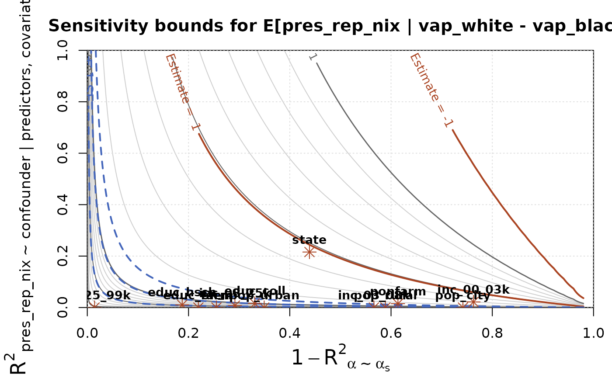

This vignette demonstrates the sensitivity analysis tools in
seine, using the elec_1968 data on
county-level voting in Southern states in the 1968 U.S. presidential
election. Sensitivity analysis is essential for ecological inference
(EI) because all EI methods rely on an untestable identifying
assumption—here, Conditional Average Representativeness, or CAR—that is
unlikely to hold exactly in practice. The tools in
seine are based on a nonparametric sensitivity
framework developed by Chernozhukov et al. (2024).
Setting up the analysis
We begin by loading the package and the data, and defining an
ei_spec object that records the outcome, predictor,
covariate, and total-count columns, following the setup from
vignette("seine"). We use a BART basis expansion for
nonparametric covariate adjustment, which we strongly recommend to avoid
dependence on linearity assumptions.
library(seine)
data(elec_1968)
spec = ei_spec(
elec_1968,
predictors = vap_white:vap_other,
outcome = pres_dem_hum:pres_abs,
total = pres_total,
covariates = c(state, pop_city:pop_rural, farm:educ_coll, inc_00_03k:inc_25_99k),
preproc = function(x) {
x = model.matrix(~ 0 + ., x) # convert factors to dummies
bases::b_bart(x, trees = 200)
}
)We fit the regression model with ei_ridge() and the
Riesz representer with ei_riesz(), then combine them with
ei_est() to estimate vote choice by race using double
machine learning (DML). We focus on the contrast between White
and Black voters, which is a direct measure of racially polarized
voting. See the main vignette (vignette("seine")) for a
full walkthrough of this estimation workflow.
m = ei_ridge(spec)
rr = ei_riesz(spec, penalty = m$penalty)
est = ei_est(m, rr, spec, contrast = list(predictor = c(1, -1, 0)), conf_level = 0.95)
print(est)
#> # A tibble: 4 × 6
#> predictor outcome estimate std.error conf.low conf.high
#> <chr> <chr> <dbl> <dbl> <dbl> <dbl>
#> 1 vap_white - vap_black pres_dem_hum -0.366 0.0472 -0.458 -0.273
#> 2 vap_white - vap_black pres_rep_nix 0.508 0.0490 0.411 0.604
#> 3 vap_white - vap_black pres_ind_wal -0.142 0.0413 -0.223 -0.0613
#> 4 vap_white - vap_black pres_abs 0.000367 0.00118 -0.00195 0.00268Sensitivity analysis
The estimates above rest on the CAR assumption: that, conditional on the observed covariates, individual vote choice is independent of the individual’s race. In practice, this assumption is unlikely to hold exactly, as there may be unobserved confounders. seine provides a number of tools to evaluate how sensitive the results are to violations of that assumption.
The sensitivity framework considers the relationship between an
unobserved confounding variable and (i) the outcome and (ii) the Riesz
representer, measured in terms of partial \(R^2\) values (c_outcome and
c_predictor, respectively). Stronger relationships indicate
more confounding and therefore more potential bias in the original
estimates.
The ei_sens() function provides a simple interface to
this framework. Users provide values for the sensitivity parameters, and
a bound on the absolute bias is returned. In the following example, we
investigate the effect of an omitted confounder that explains 50% of the
residual variation in the outcome and 20% of the variation in the Riesz
representer.
ei_sens(est, c_outcome = 0.5, c_predictor = 0.2)
#> # A tibble: 4 × 9
#> predictor outcome estimate std.error conf.low conf.high c_outcome c_predictor
#> <chr> <chr> <dbl> <dbl> <dbl> <dbl> <dbl> <dbl>
#> 1 vap_white… pres_d… -3.66e-1 0.0472 -0.792 0.0606 0.5 0.2
#> 2 vap_white… pres_r… 5.08e-1 0.0490 0.0130 1.00 0.5 0.2
#> 3 vap_white… pres_i… -1.42e-1 0.0413 -0.658 0.373 0.5 0.2
#> 4 vap_white… pres_a… 3.67e-4 0.00118 -0.0167 0.0174 0.5 0.2
#> # ℹ 1 more variable: bias_bound <dbl>We can also work backwards and ask what one of the sensitivity
parameters would have to be in order to produce a certain amount of
bias. For example, if we assumed a worst-case scenario where the
confounder explains the entire outcome (c_outcome = 1), we
can ask how strongly that confounder would need to be related to the
Riesz representer to produce a bias of up to 5pp.
ei_sens(est, c_outcome = 1, bias_bound = 0.05)
#> # A tibble: 4 × 9
#> predictor outcome estimate std.error conf.low conf.high c_outcome c_predictor
#> <chr> <chr> <dbl> <dbl> <dbl> <dbl> <dbl> <dbl>
#> 1 vap_white… pres_d… -3.66e-1 0.0472 -0.508 -0.223 1 0.00280
#> 2 vap_white… pres_r… 5.08e-1 0.0490 0.361 0.654 1 0.00197
#> 3 vap_white… pres_i… -1.42e-1 0.0413 -0.273 -0.0113 1 0.00165
#> 4 vap_white… pres_a… 3.67e-4 0.00118 -0.0519 0.0527 1 0.590
#> # ℹ 1 more variable: bias_bound <dbl>For most predictors and outcomes, the answer is not very much!
Benchmarking
The c_outcome parameter is relatively easy to
understand, but c_predictor is more difficult to interpret
(though see the methodology paper for more discussion). To help
understand plausible values of these parameters, we can conduct a
benchmarking analysis that treats each of our
observed covariates in turn as a hypothetical
unobserved confounder, and calculates the implied values of the
sensitivity parameters.
bench = ei_bench(spec, contrast = list(predictor = c(1, -1, 0)))
#> ⠙ ETA:17s Benchmarking state [1/13]
#> ⠹ ETA:16s Benchmarking pop_city [2/13]
#> ⠸ ETA:13s Benchmarking pop_rural [4/13]
#> ⠼ ETA:10s Benchmarking nonfarm [6/13]
#> ⠴ ETA: 7s Benchmarking educ_hsch [8/13]
#> ⠦ ETA: 4s Benchmarking inc_00_03k [10/13]
#> ⠧ ETA: 1s Benchmarking inc_08_25k [12/13]
#> ⠧ ETA: 0s Benchmarking inc_25_99k [13/13]
subset(bench, outcome == "pres_rep_nix")
#> # A tibble: 13 × 7
#> covariate predictor outcome c_outcome c_predictor confounding est_chg
#> <chr> <chr> <chr> <dbl> <dbl> <dbl> <dbl>
#> 1 state vap_white - va… pres_r… 0.216 0.439 -0.113 -0.0623
#> 2 pop_city vap_white - va… pres_r… 0 0.742 -1 -0.00169
#> 3 pop_urban vap_white - va… pres_r… 0 0.349 -1 -0.0450
#> 4 pop_rural vap_white - va… pres_r… 0 0.589 -1 -0.0186
#> 5 farm vap_white - va… pres_r… 0 0.255 -1 -0.0243
#> 6 nonfarm vap_white - va… pres_r… 0.0148 0.614 -0.419 -0.0677
#> 7 educ_elem vap_white - va… pres_r… 0 0.219 -1 -0.0436
#> 8 educ_hsch vap_white - va… pres_r… 0.0104 0.187 0.136 0.0119
#> 9 educ_coll vap_white - va… pres_r… 0.0158 0.331 -0.0780 -0.0105
#> 10 inc_00_03k vap_white - va… pres_r… 0.0216 0.763 -0.126 -0.0263
#> 11 inc_03_08k vap_white - va… pres_r… 0 0.566 -1 -0.0321
#> 12 inc_08_25k vap_white - va… pres_r… 0.00749 0.292 -0.310 -0.0274
#> 13 inc_25_99k vap_white - va… pres_r… 0 0.0144 -1 -0.0185The table above shows the benchmark values for each covariate for the
racially polarized Nixon vote estimand. The confounding
column is an additional component of the sensitivity analysis that is
discussed in the paper; the default value is 1, which is a conservative
worst-case bound. The benchmark values here show that state
is far and away the strongest observed confounder, whose inclusion
changes the estimate by 38%. If the unobserved confounders were as
strong as state, we might expect a significant amount of
bias, as we will see next.
Bias contour plot
Rather than perform this sensitivity analysis on a single set of sensitivity parameters, we can run it across all combinations of parameter values, and visualize the results on a bias contour plot. We can further overlay the benchmarking values to help interpret the results.
sens = ei_sens(est) # the default evaluates on a grid of parameters
plot(sens, "pres_rep_nix", bench = bench, bounds = c(-1, 1))
The contour lines indicate how much bias could result from an unobserved confounder with the specified sensitivity parameters. The blue dashed contours correspond to bias of 1, 2, and 3 standard errors. This is a helpful value to compare against, because bias of that size corresponds to a predictable drop in coverage rates of confidence intervals. For example, bias of 1 standard error means that a confidence interval with 95% nominal coverage will actually have coverage of only around 80%.
The red asterisks indicate the benchmark values for each covariate.
Most are clustered in the lower-left corner and can’t be distinguished.
In contrast, the benchmark for state shows that an
unobserved confounder of that strength could lead to bias of around 46%,
which is substantial compared to the estimate itself, which is 51%.
Robustness value
Finally, it can be helpful to summarize the sensitivity analysis by a
single number. The ei_sens_rv() function calculates the
robustness value, which measures the minimum strength
of an unobserved confounder that would lead to a bias of a given amount.
Here, we consider bias sufficient to eliminate any evidence of racially
polarized voting, i.e., bias equal to the estimated difference between
White and Black voters.
ei_sens_rv(est, bias_bound = estimate)
#> # A tibble: 4 × 7
#> predictor outcome estimate std.error conf.low conf.high rv
#> <chr> <chr> <dbl> <dbl> <dbl> <dbl> <dbl>
#> 1 vap_white - vap_black pres_dem_… -3.66e-1 0.0472 -0.458 -0.273 0.320
#> 2 vap_white - vap_black pres_rep_… 5.08e-1 0.0490 0.411 0.604 0.360
#> 3 vap_white - vap_black pres_ind_… -1.42e-1 0.0413 -0.223 -0.0613 0.109
#> 4 vap_white - vap_black pres_abs 3.67e-4 0.00118 -0.00195 0.00268 0.00876The robustness value (one for each predictor/outcome combination) is
relatively small for Wallace’s vote share, indicating low robustness
(high sensitivity). In particular, it is far smaller than the amount of
confounding benchmarked by the observed state variable. For
Humphrey and Nixon’s vote shares, however, the robustness values are
larger, indicating more confidence in the finding of racially polarized
voting for those candidates.
As with any single-number summary, it is important to consider sensitivity beyond the single value, by using the contour plot and the benchmarking analysis.
References
McCartan, C., & Kuriwaki, S. (2025+). Identification and semiparametric estimation of conditional means from aggregate data. Working paper arXiv:2509.20194.
Chernozhukov, V., Cinelli, C., Newey, W., Sharma, A., & Syrgkanis, V. (2024). Long story short: Omitted variable bias in causal machine learning (No. w30302). National Bureau of Economic Research.